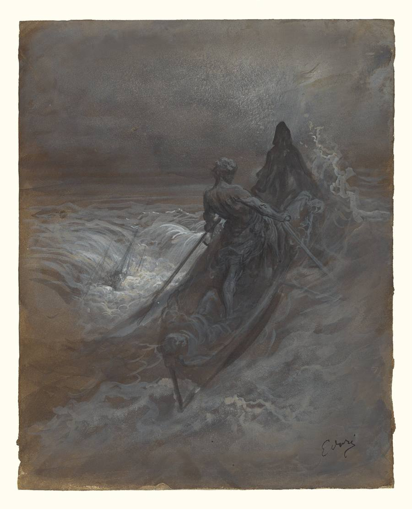
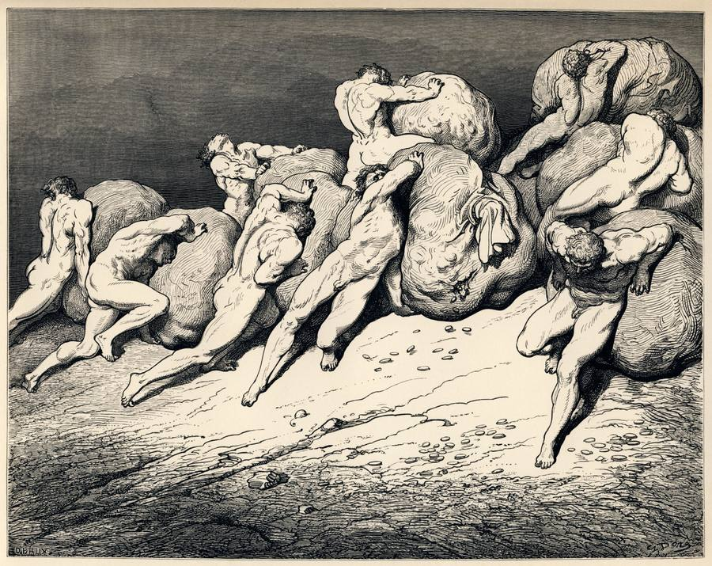
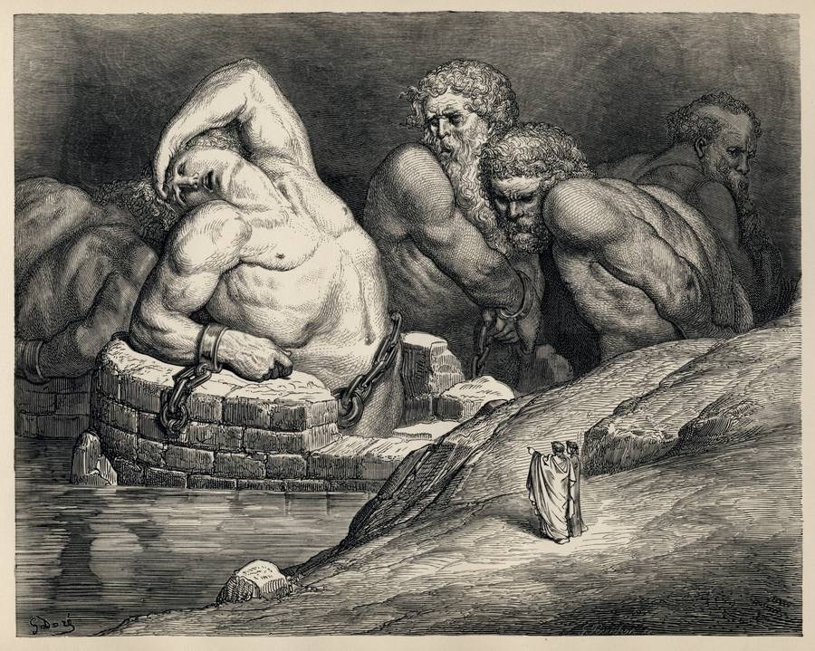
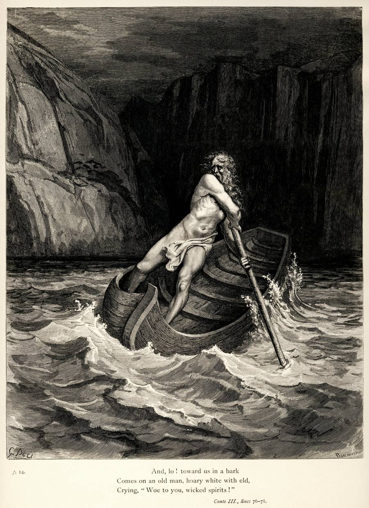

You stood at the entrance.
You crossed.
What follows now is the first descent —
four chambers, each one deeper than the last.
You will not come back unchanged.
The Trinity Profile maps you across four dimensions — Mind, Spirit, Soul, and the Body. Nothing in the school builds without it. The map comes first because you cannot navigate a labyrinth you have not yet agreed to enter.
This is not a quiz. Not a personality test. It is a structured conversation with Iris — a discovery interviewer built to draw out what you cannot yet draw out yourself. The map is built from what you bring in. Its accuracy depends entirely on what you are willing to name.
"Those who travel to hell voluntarily are treated as divinity."
Ancient Initiatory Tradition
Most people have a story about their own mind. They are a big picture thinker. They work best under pressure. They struggle with follow-through. These stories are not the map — they are the map the mind has built to protect itself from a more accurate one.
The Mind section does not ask you to identify yourself. It asks you to tell a story. What you built. What you started and didn't finish. A decision you made last year and how it actually happened. The cognitive architecture reveals itself in the telling.
What emerges is the actual operating sequence of your mind — the wiring beneath the story, the failure mode that has a specific shape, the gap between who you believe yourself to be and what the people closest to you see when you are under pressure.

The Spirit section is the most defended territory. Everyone has narratives here — about their emotional health, their relationships, their capacity for love. The narratives are not the map. They are what we built to survive the gap between who we wanted to be and what actually happened.
What lives here: the grief that is still running. The cycle that repeats across every relationship regardless of who the other person is. The thing you do at your absolute worst, when you are exhausted and cornered, that you would rather not look at directly. What you reach for when you are carrying more than you can hold and there is no good option available.
The shadow does not yield to direct questions. It reveals itself through what you defend, through what others have kept bumping into. Iris comes at it from the back — because that is the only door that opens.
If one finds themselves in hell —
why would they stop walking?

The Soul section goes somewhere older than memory and older than personality. It asks for a specific childhood memory — before school told you what to be good at, before anyone had opinions about who you were. What were you doing with your mind? What were you endlessly drawn to?
This is the pre-dispositional layer. The encoded architecture that was present before experience formed character. The numerological chart calculated from the name on your birth certificate. The astrological signature of the moment you arrived.
What emerges is the mission beneath the biography — not a career, not a role, but something that would be lost if you weren't here to pass it forward. And the honest distance between that transmission and what you are actually doing with your days right now.
"The mirror of true self-reflection lies atop the pillar of adversity."
Initiatory Tradition
The body is the oldest intelligence in the room. It has been signaling things the mind has been too busy to hear. It knows where the nervous system is dysregulated. It knows what it has been carrying that hasn't been resolved. It knows — most of the time — exactly what the solution looks like.
Most people who arrive at the fracture point have already identified the answer their body is pointing toward. They have a sense of the place, the way of living, the environment that would let them breathe. The Body section is where that gets named explicitly rather than remaining as a feeling that hasn't been spoken aloud.
At the end of the interview, Iris assembles a complete Trinity Profile — a multi-page document synthesizing everything surfaced across all four dimensions. Your numerological chart. Your astrological signature with all seven placements interpreted in combination. Your 28-day biological cycle tracked to the current date. Your cognitive architecture mapped from the stories you told. Your shadow work named with precision — the pattern, its cost, who it touches.
The document is yours to download immediately. It is not stored, sold, or used for any other purpose. It is the map. The work of The Labyrinth begins from there.
This is a structured discovery conversation, not a quiz or form. Iris will ask you questions and follow threads. Your words are captured verbatim to build the profile — nothing is softened or summarized.
Nothing shared is stored server-side or used for any purpose other than producing your document. The interview runs entirely in your browser session. When you close it, the session is gone. The profile you download is the only record.
Set aside ninety minutes. Find a quiet place. Voice and text both work — speak or type, whichever feels more natural. The interview is built for voice.
The interview opens in a new window.
Voice is recommended. Silence is required.
What you bring in determines what you carry out.